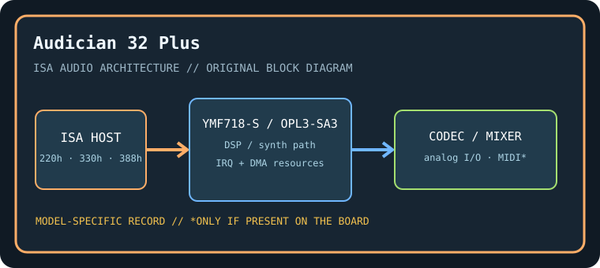

[ INDIVIDUAL COMPONENT // SOUND HARDWARE ]
Yamaha Audician 32 Plus (YMF718-S)
Cataloged as the Yamaha Audician 32 Plus ISA board using the YMF718-S OPL3-SA3 audio controller. OEM boards with a similar chip can differ in connectors, ROM, and PCB routing.

Model-specific specifications
| Catalog identity / chipset / DSP | Yamaha Audician 32 Plus (YMF718-S). Yamaha YMF718-S OPL3-SA3 single-chip ISA audio controller with OPL3 FM synthesis and Sound Blaster-compatible logic. |
|---|---|
| Audio codec / conversion | Integrated stereo 16-bit codec functions in the YMF718-S family; board-level analog connectors and filtering depend on the specific Audician PCB revision. |
| Bus / I/O / ports | 16-bit ISA. ISA PnP resources commonly include SB base 220h, MPU/MIDI 330h, OPL3 388h, and WSS-compatible 530h; driver/BIOS assigns decode and mixer resources. |
| IRQ | PnP-selectable IRQ; typical ISA audio choices include 5, 7, 9, or 10. Confirm YMF718 configuration utility and board documentation. |
| DMA | PnP-selectable 8-bit DMA (often 1) and 16-bit DMA (often 5); available channels depend on host chipset reservations. |
| Driver / operating system | Yamaha OPL3-SA3 DOS configuration utilities and Windows 95/98 drivers; WSS/SB compatibility layers depend on driver and resource setup. Later Windows support is not assumed. |
| Motherboard compatibility | Requires an ISA PnP-capable PC or initialization utility. Some later motherboards omit ISA or bridge it imperfectly; test legacy DMA timing, PnP resource persistence, and analog output. |
| Sound standards / interfaces | OPL3 FM/AdLib, Sound Blaster-compatible digital audio, Windows Sound System-compatible PCM, and MPU-401 UART MIDI interfaces when enabled by driver. |
| Connectors / power | ISA slot power; use only the analog, MIDI, CD-audio, and auxiliary connectors physically present on this exact board. Inspect the edge bracket, keyed headers, PCB revision, and manual before connecting. |
Compatibility & preservation notes
Cataloged as the Yamaha Audician 32 Plus ISA board using the YMF718-S OPL3-SA3 audio controller. OEM boards with a similar chip can differ in connectors, ROM, and PCB routing. The precise DSP/codec package, firmware, resource assignment, and OS driver release must be matched to the physical SKU. Record the actual base port, IRQ, DMA channels, driver version, motherboard chipset, and BIOS configuration used in a working test rather than copying family defaults.
- Photograph the complete model number, PCB revision, major IC markings, jumpers, connectors, and any daughterboard before service.
- Check DMA and IRQ reservations against storage, serial/parallel, and other ISA devices; test PCM, synthesis, and MIDI functions independently.
- Power down and unplug the host before fitting/removing ISA hardware. Keep the exact manual and original setup/driver media with the specimen.
Manufacturer manuals & archival sources
- Internet Archive — Yamaha Audician 32 Plus YMF718-S manualArchive catalog search for original manufacturer-authored manual/setup documentation for this model; confirm the full SKU and revision in any scan.
- Internet Archive — Yamaha YMF718-S OPL3-SA3 utilities and driversArchive catalog search for preserved manufacturer driver, utility, or bundled software media for this specific board.
- Internet Archive — Yamaha Audician 32 Plus YMF718-S documentation archiveAdditional model-specific catalog records and manuals; use the physical board marking to exclude adjacent revisions and related products.
Archive search links are discovery records rather than claims that one particular scan is an original; verify provenance, revision and completeness before relying on a scanned setup guide.